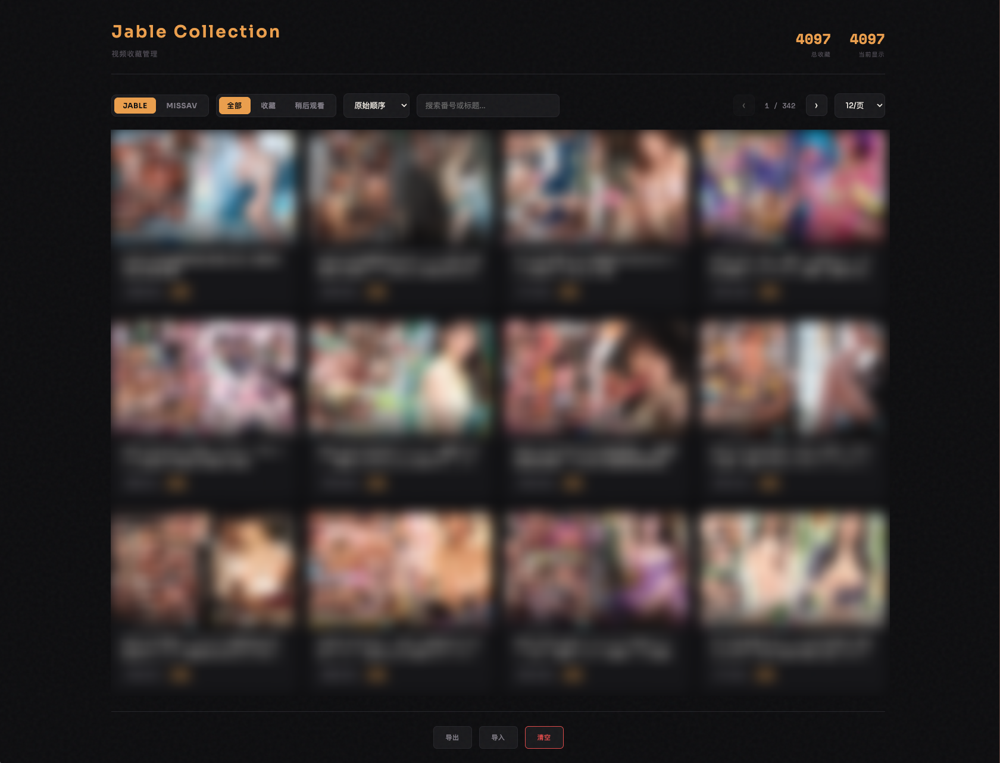

分散
Jable 和 MissAV 各收各的，想找一部片时需要在两个站点反复翻。
Jable + MissAV 收藏管理工具
一键同步两个站点的收藏，放进你自己的浏览器资料库。 搜索、筛选、排序、备份，不再让收藏只停在“收藏过”。
不是又一个“稍后再看”列表。
01 / WHY
Jable 和 MissAV 各收各的，想找一部片时需要在两个站点反复翻。
收藏越多，早期内容越难找。缺少跨站搜索、筛选和稳定排序。
数据锁在站点账号里。没有一份属于自己、可导出和恢复的收藏档案。

02 / PRODUCT
在官网收藏或取消，本地跟着更新；从管理页取消，也会回写官网。
长时间同步有分页进度、双轮校验和持久结果；失败时保留旧数据。
按番号或标题搜索，按来源筛选、按原始顺序浏览，并随时导出 JSON 备份。
03 / START
下载并解压最新 Beta，在 chrome://extensions 开启开发者模式，加载已解压的扩展。
登录 Jable 或 MissAV，进入对应的收藏页。扩展会自动识别当前站点。
点击“同步当前页面”。完成后打开管理页，搜索、排序、筛选或备份。
04 / OWNERSHIP
收藏记录保存在当前浏览器的 IndexedDB 中，不需要 Jable Collect 云端账号。你可以随时导出和恢复。
LOCAL-FIRST数据不被产品锁死
05 / FAQ
不会。两个站点的收藏独立管理，Jable Collect 做的是把它们汇总到同一个本地管理页，不会擅自跨站点添加收藏。
可以切换到其他标签页，但请不要关闭或跳转正在同步的收藏页。完成或失败后，页面状态栏和扩展图标都会给出结果。
不会。同步失败时会保留旧数据。MissAV 只有在两轮完整快照一致时，才会用官网结果替换本地收藏。
当前版本仍在 Beta 阶段，通过 GitHub Releases 发布，尚未上架 Chrome Web Store。下载时请认准官方仓库。